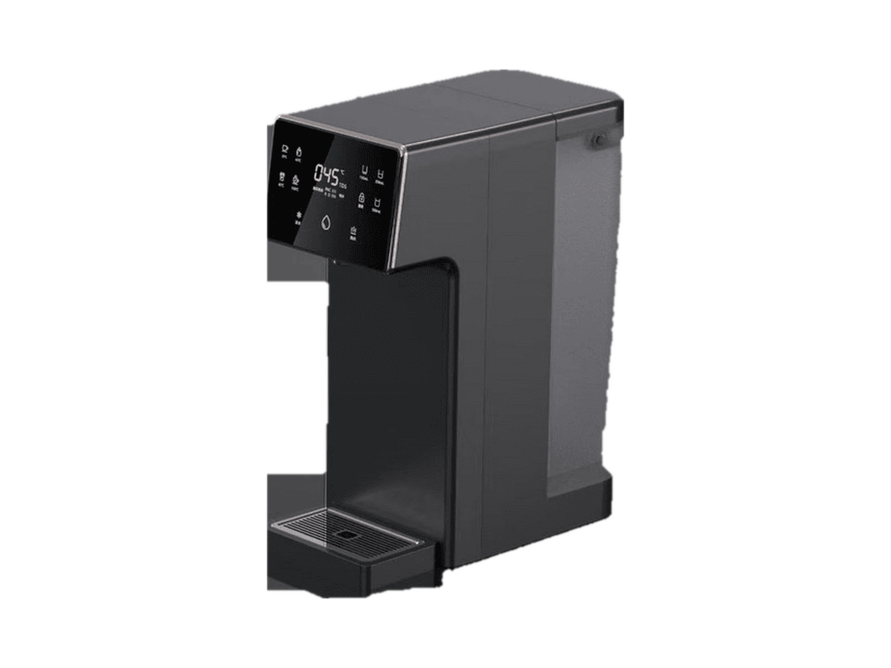

卓上型
卓上型RP-C07
加熱ジャグ付きRO浄水器
SKU: RP-C07
MOQ：お問い合わせ時に確認

卓上型システム
卓上浄水器
RP-C12 — 卓上浄水器。主な仕様：寸法314×165×396 mm。仕様はモデルと注文ごとに確認します。
電圧／周波数は対象国に合わせて設定可能です。その他の構成は注文ごとに確認します。
RP-C12はROろ過（PCB + RO）75 GPD、定格総浄水量2000 Lの卓上浄水器（T01）です。原水タンク4 L、純水タンク1 L、2100 Wの加熱出力で、100/85/60/45 °Cと常温を150/300/450 mLの容量で給水します。寸法は314 × 165 × 396 mmです。
最小注文数量はいくつですか？
初回注文はモデルあたり200台、再注文は500台です。
大口注文の前にサンプルを注文できますか？
はい。サンプルは15日でご用意できます。サンプル費用は初回大口注文時に返金されます。大口注文はサンプル承認後40日で出荷し、FOB深圳条件となります。
どの温度と容量を吐出しますか？
100/85/60/45 °Cに常温を加えた5温度、150/300/450 mLの容量設定。
ROPureOEMカタログの仕様 19 行。
| 寸法 | 314×165×396mm |
|---|---|
| 浄水流量 | 1.2 L/min（常温）／0.4 L/min（温水）；純水流量0.2 L/min |
| 定格総浄水量 | 2000 L |
| RO容量 | 75 GPD |
| 水タンク | 原水タンク4 L；純水タンク1 L |
| ろ過 | PCB + RO |
| 浄水回収率 | ご注文ごとに確認いたします |
| 定格出力 | 2150 W |
| 加熱出力 | 2100 W |
| 温水生成量 | ご注文ごとに確認いたします |
| 温度設定 | 100／85／60／45°C＋常温 |
| 容量設定 | 150/300/450ml |
| 感電保護 | クラスI |
| 使用圧力 | 0 MPa |
| 原水圧力 | 0 MPa |
| 原水源 | ご注文ごとに確認いたします |
| 原水温度 | 5–45°C |
| 電圧／周波数 | 対象国に合わせて設定可能 |
| その他の構成 | ご注文ごとに確認いたします |
仕様はROPureOEMカタログに基づいています。値がまだ確認されていない場合は「注文ごとに確認」と記載しています。未確認の数値は公表しません。